Solicitudes de Bienes

Solicitudes de bienes
En la sección de Solicitudes de Bienes, el usuario puede realizar tres tipos de solicitudes, las cuales son: para uso interno, uso externo y para agentes externos.
Para acceder a esta funcionalidad debe Dirigirse al Módulo de Bienes, luego a Solicitudes.
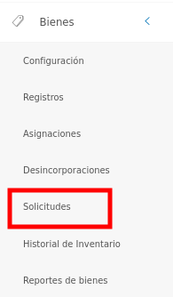
Luego, el sistema presenta un panel central con las secciones: solicitudes de bienes, solicitudes de bienes pendientes, solicitudes de prórrogas pendientes y entrega de bienes pendientes.
La sección Solicitudes de Bienes presenta una lista con todos los registros de las solicitudes de préstamo realizadas, y permite crear, ver información detallada, solicitar prórroga, registrar eventos, entregar equipo, editar solicitud y eliminar registros.
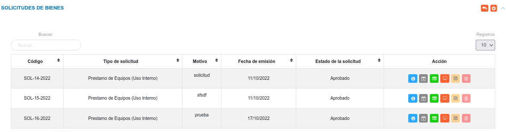
Crear una nueva solicitud
Advertencia
- Los bienes disponibles para la sección de solicitudes, son aquellos identificados bajo el Estatus de uso "En Almacén o Depósito para su asignación", y Condición física óptimo para formar parte de una solicitud de préstamo. En caso de que un bien se encuentre asignado es necesario liberar este bien de dicha asignación y cambiar su estatus de uso, permitiendo así su disponibilidad para una solicitud.
Para crear un nuevo registro
- Dirigirse al Módulo de Bienes, luego a Solicitudes y ubicarse en la sección Solicitudes de Bienes.
- Haciendo uso del botón Crear
 ubicado en la esquina superior derecha de esta sección, se procede a realizar una nueva solicitud.
ubicado en la esquina superior derecha de esta sección, se procede a realizar una nueva solicitud. - Se completa el formulario ingresando datos, como: fecha, motivo, tipo de solicitud, se seleccionan los bienes a solicitar, también es posible adjuntar varios archivos que justifiquen la solicitud del préstamo. Los archivos permitidos son: odt, pdf, png, jpg, jpeg, doc y docx.
- Se presiona el botón Guardar
 ubicado al final de esta sección, y se verifica en la lista de registros en Ingresos de Almacén.
ubicado al final de esta sección, y se verifica en la lista de registros en Ingresos de Almacén. - Se Presiona el botón Cancelar
 para cancelar registro y regresar a la ruta anterior.
para cancelar registro y regresar a la ruta anterior. - Se Presiona el botón Borrar
 para eliminar datos del formulario.
para eliminar datos del formulario. - Si desea recibir ayuda guiada presione el botón
 .
. - Para retornar a la ruta anterior presione el botón
 .
.
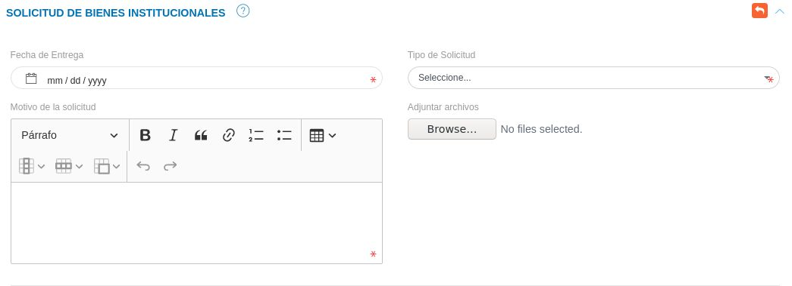
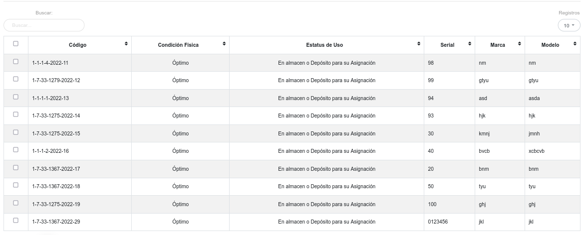
Gestión de registros
Mediante los botones ubicados en la columna titulada Acción es posible visualizar la información de forma detallada, solicitar prórroga de entrega de bines, reportar eventos, entregar bienes, editar y eliminar un registro.
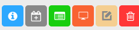
Consultar registros
-
Para ver información detalla de un registro pulse el botón Ver
 para un registro de interés.
para un registro de interés. -
Seguidamente, el sistema muestra una interfaz con la información ingresada previamente de la solicitud de préstamo del bien.
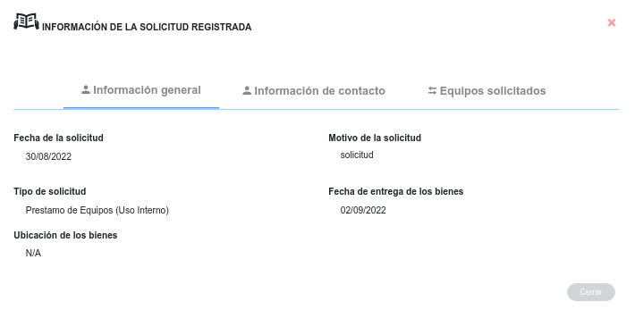
Solicitar prórroga
Esta funcionalidad le permite al usuario responsable del equipo solicitar una extensión de tiempo para la entrega del equipo.
- Para realizar una solicitud de prórroga pulse el botón Solicitud de Prórroga
Botón solicitar prorroga
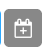
- Seguidamente, el sistema muestra una interfaz donde muestra por defecto la fecha actual de entrega de los bienes.
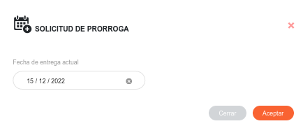
-El usuario indica la nueva fecha de entrega del equipo, y pulsa Aceptar.
-Luego el sistema lista la solicitud de prórroga en la tabla de Solicitudes de Prórrogas Pendientes.
Nota
- El botón Solicitud de Prórroga se activa una vez se apruebe la solicitud.
- El botón Solicitud de Prórroga se desactiva una vez se realice la entrega de equipos.
Registrar evento
Esta funcionalidad le permite al usuario responsable del equipo reportar un evento, en caso de que el equipo de la solicitud presente alguna avería o pérdida,
- Para reportar un evento, pulse el botón Registro de Eventos
Botón reportar evento
- Seguidamente, el sistema muestra una interfaz donde muestra por defecto la fecha actual de entrega de los bienes.
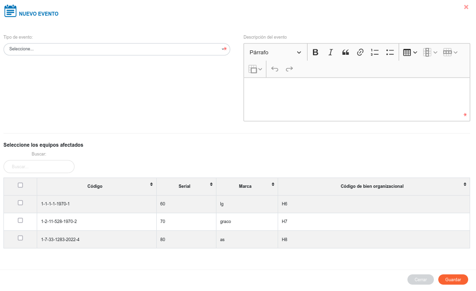
-El usuario indica el tipo de evento, la descripción, selecciona los bienes afectados, y pulsa Aceptar.
- Una vez que el usuario pulse Aceptar, el sistema lo lista en la tabla de registros de eventos.
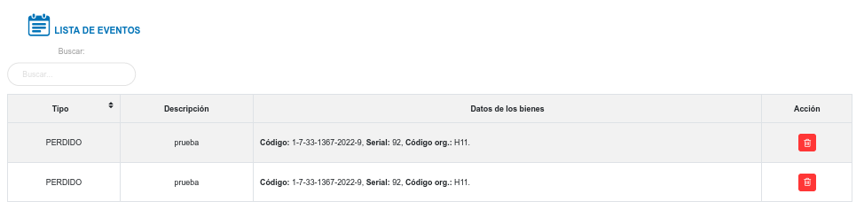
- Si el usuario pulsar el botón Eliminar para un evento de interés, el sistema lo lista nuevamente en el formulario de eventos.
Nota
- El botón Registro de Eventos se activa una vez se apruebe la solicitud.
- Una vez que el usurio reporte un evento para un bien, este ya no puede ser asignado, ni solicitado para un préstamo.
Entrega de bienes
Meidante esta funcionalidad el usuario registra la entrega de equipos, el cual debe ser evaluada posteriormente por el encargado de bienes institucionales para su respectiva aprobación.
- Para realizar la entrega de bienes, pulse el botón Entregar Equipos.
Botón entregar equipo
-Luego el sistema lista la entrega de bienes en la tabla de Entrega de Bienes Pendientes.
Solicitudes de bienes pendientes
Una vez se genera una nueva solicitud, además de añadirse a la tabla Solicitudes de Bienes, el registro se almacena en la tabla de Solicitudes de Bienes Pendientes, desde esta sección se gestiona la aprobación o rechazo de solicitud.
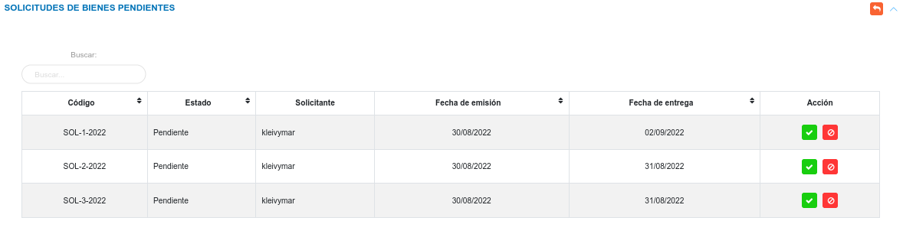
- Pulse el boton Aceptar Solicitud para aprobar la solicitud de préstamo de equipos.
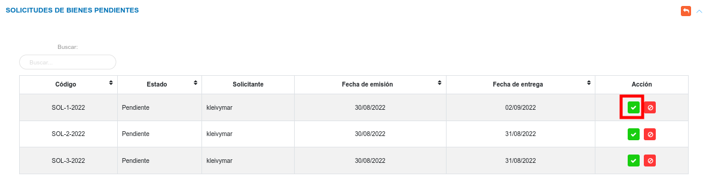
- El sistema presenta un mensaje de confirmación, junto con las opciones Cancelar y Confrimar. Una vez se confirme la solicitud esta toma el estado Aprobado.
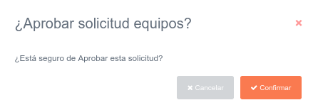
- Pulse el boton Rechazar Solicitud para negar la solicitud de préstamo de equipos.
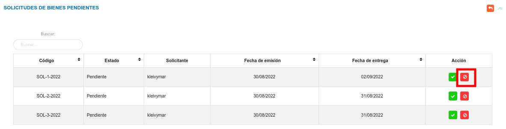
- El sistema presenta un mensaje de confirmación para rechazar la solicitud, junto con las opciones Cancelar y Confrimar. Una vez se confirme el rechazo de la solicitud esta toma el estado Rechazado.
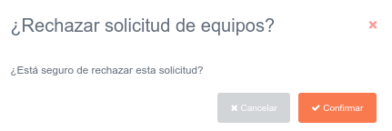
Nota
-
Una vez que el usuario apruebe una solicitud, el sistema cambia el Estatus de Uso del bien a En uso, y este ya no puede ser asignado ni solicitado en calidad de préstamo.
-
Una vez que el usuario rechace una solicitud, el sistema envía nuevamente al inventario el bien, y este puede ser asignado o solicitado en calidad de préstamo.
Solicitudes de prórrogas pendientes
En esta sección se presentan las solicitudes de prórrogas pendientes, el encargado de bienes institucionales evalúa la solicitud y a través de los botones ubicados en la columna titulada Acción puede: aceptar o rechazar una solicitud de prórroga.
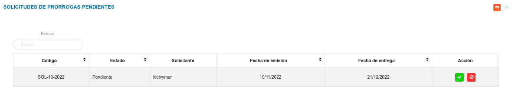
- Pulse el boton Aceptar Solicitud para aprobar la solicitud de prórroga.
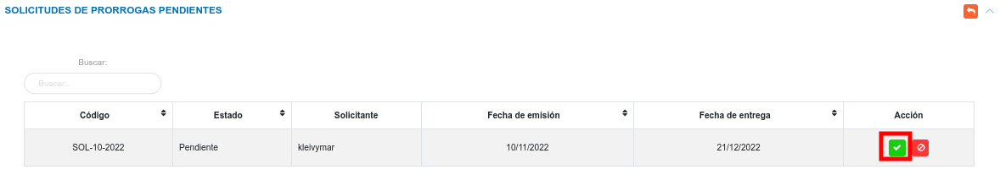
- El sistema presenta un mensaje de confirmación, junto con las opciones Cancelar y Confrimar. Una vez se confirme la solicitud esta toma el estado Aprobado.
- Pulse el boton Rechazar Solicitud para negar la solicitud de prórroga.
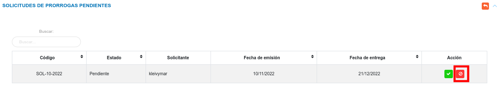
- El sistema presenta un mensaje de confirmación para rechazar la solicitud, junto con las opciones Cancelar y Confrimar. Una vez se confirme el rechazo de la solicitud esta toma el estado Rechazado.
Entregas de bienes pendientes
En esta sección se listan las solicitudes para entrega de bienes. El encargado de bienes institucionales evalúa la entrega y mediante los botones ubicados en la columna titulada acción puede: aceptar solicitud, rechazar solicitud o eliminar el registro.
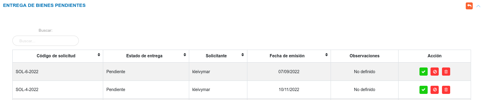
Aceptar entrega de bienes
- Pulse el boton Aceptar Solicitud para aprobar la entrega de bienes.
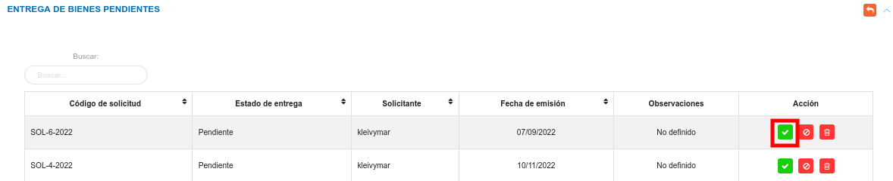
-
El sistema presenta una interfaz, donde solicita información en el campo observaciones generales, junto con las opciones Cancelar y Confirmar.
-
Pulse el botón Confirmar para aprobar la entrega de bienes.
-
El sistema cambia el estado de la entrega a Aprobado.
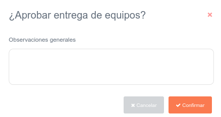
Nota
- Una vez se apruebe la entrega de bienes, el sistema deshabilita los botones Rechazar y Eliminar.
Rechazar entrega de bienes
- Pulse el boton Rechazar Solicitud para negar la entrega de bienes.
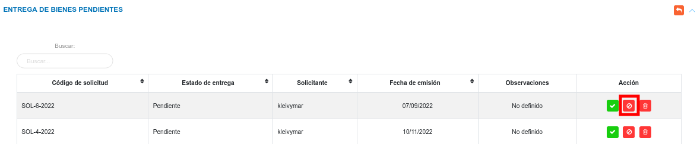
-
El sistema presenta un mensaje de confirmación para rechazar la solicitud, junto con las opciones Cancelar y Confirmar.
-
Pulse el botón Confirmar para negar la entrega de bienes.
-
El sistema cambia el estado de la entrega a Rechazado.
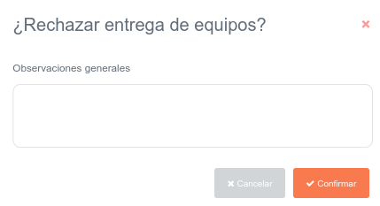
Nota
- Una vez se rechace la entrega de bienes los botones Aceptar, Rechazar y Eliminar se deshabilitan.
Eliminar registros
- Presione el botón Eliminar
 para un registro de interés.
para un registro de interés. - Seguidamente, el sistema presenta un modal con un mensaje de confirmación de si está seguro de eliminar el ingreso de almacén, y muestra los botones Confirmar y Cancelar.
- Pulse el botón Confirmar si está seguro de eliminar el registro seleccionado.
- El sistema elimina el registro.
- Si pulsa el botón Cancelar, el sistema no ejecuta ninguna acción.